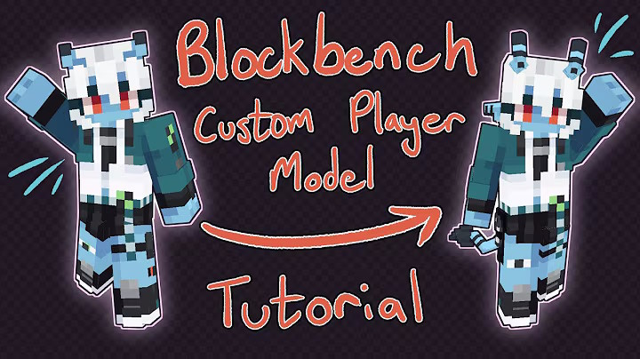
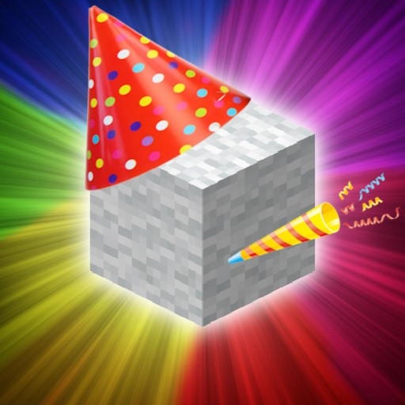
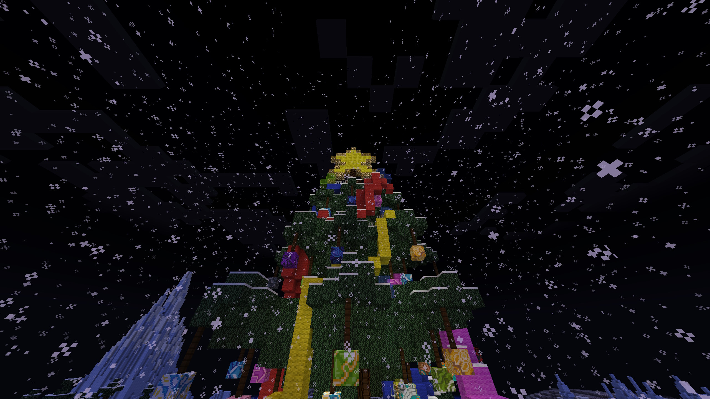
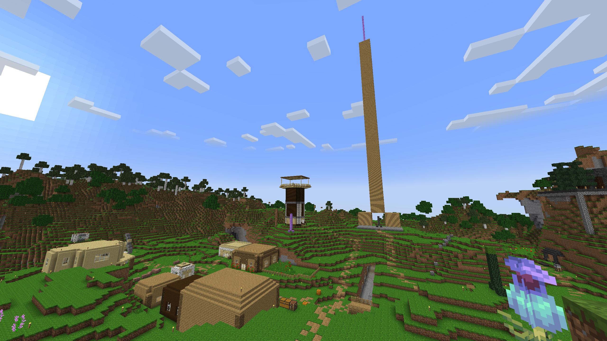
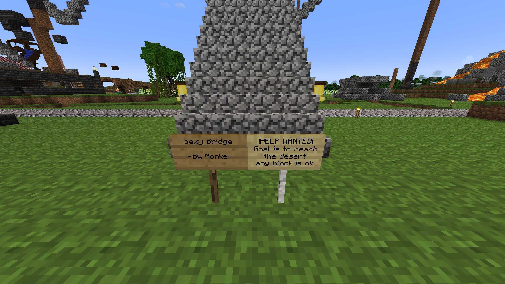
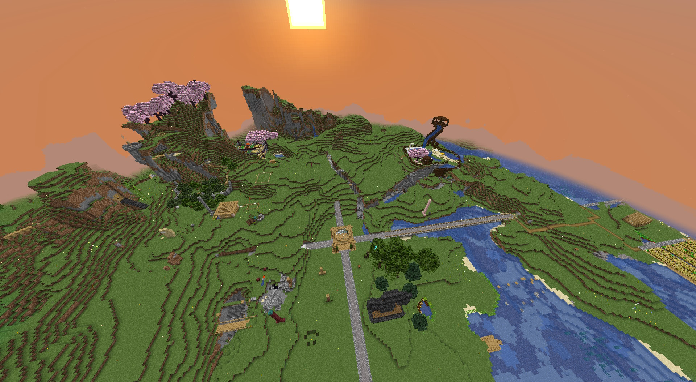

/miscellaneous/ - News
21/03/25 - Strange players?
To improve the experience on the server, it has been decided to add this plugin that gives the players the ability to create their own 3D model. As always, this feature will be abused and funky avatars will appear all over the server. Did i predict the future? Nah, it's just well known how the DiversityCraft playerbase is...
04/02/25 - 11th anniversary
Happy birthday to you, happy birthday to you, happy birthday to DiversityCraft happy birthday to youu!!! Today our community is now 11 years, a lot of time has passed since the day we started, and lot happened since the 10th anniversary, i (the owner) can guarantee you that this year is gonna be much better for us! There is a r/place event on the Discord server, you MUST join in to participate an leave a sign on the canvas, join in NOW: https://discord.gg/KxadTdz
26/10/24 - Christmas Season with boom
It's the 1st of December 2024, and what an awesome way to start the Christmas season! First of all, the server has been update to the latest version of Minecraft 1.21.3 "Bundles of Bravery" bringing a few changes and more small features to Donator players, the other big change is that all of our links are slowly transictioning to the domain diversitycraft.xyz, the first thing that changed is the IP address to connect to the Minecraft server, the owner is organizing Christmas games for his 11th video on YouTube, more details on the Discord server, make sure to join there since the Christmas Season started!
26/10/24 - The born of "Cocktown"
Out of no where a small town is being built very close to spawn that goes by the name of "Cocktown", the name refers to the huge, enormous, gigantic wooden dick statue that stretches all the way to the sky, almost hitting the Minecraft build limit (y319), the statue is the symbol of the town. The only big issue is that the town is very easy to destroy since it is mainly made out of wood, as always, let's hope it can develop into a bigger town without being destroyed too soon, let's hope for the best!
20/09/24 - Longest bridge?
A small group of players lead by "MonkeBanana1998" recently started working on the biggest project in the new world, building a bridge that connects all Minecraft biomes in a straight line, useful for new people to find their favourite biome, the end goal of the project is to reach the desert biome, at the moment the bridge stretches for more than 9000 blocks towards south! Let's see if they will ever manage to reach their final goal!
25/08/24 - What a good looking spawn!
It seems like after the start of the new fresh world, the players immediatly started decorating, building and terraforming the server's spawn (at coordinates X 0, Z 0, the center of the world), making it look better and welcoming for new players. This reminds of the 2014's start, where griefing was unthinkable back then, since the playerbase wasn't interested in destroying the landscape, but rather make it look good with their building ideas! Let's hope it lasts for a long as possible!
09/08/24 - We are on YouTube!
The owner just started his YouTube channel! Already up for about week with the first 2 video being uploaded, go and watch him now, and stay tuned for his future videos!
02/08/24 - Server is back, and with the latest version!
Server is back to being online 24/7 after years of silent, im proud to announce that we are so back, with a fresh start, a big return for our small but strong community!
The server has also been update to the latest version of Minecraft as of now 1.21, various additions, fixes and changes have been implemented. Hopefully this is gonna be the first and the last big downtime. See you in!